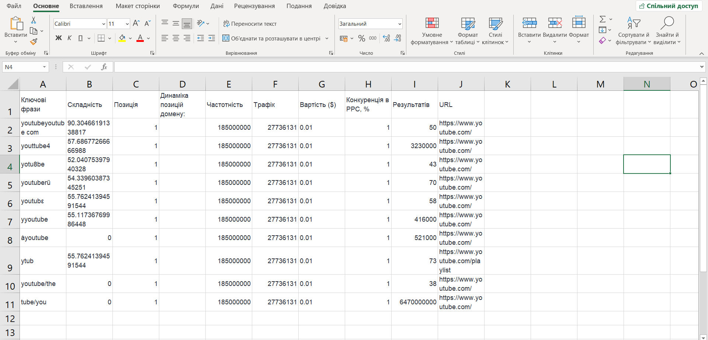

Семантичне ядро
Семантичне ядро - Перелік пошукових запитів, що повністю описують весь сайт з урахуванням бажань та інтересів споживача. Використовується для організації семантики сайту.
Тут головна мета визначити бажання та наміри користувача, та
виправдати його очікування, надавши йому максимально релевантну
відповідь. Сторінка має бути вирішенням проблеми відвідувача.
Повна семантика сайту і його структура.
Орієнтуватися також треба на вашу цільову аудиторію, бо важливо
розуміти які у них можуть бути інтереси. Також важливо розуміти:
- Кому ми продаєм? - вік, стать, мислення. Опираючись на це, формується великий блок запитів;
- Що ми продаєм? - під це важливо підлаштовуватися, бо якщо ви щось продаєте, це зазвичай якийсь окремий продукт, на якому повинна бути концентрація, щоб користувач легко міг зрозуміти, чи потрібно воно йому;
- Яка проблема може бути у покупця? - Знаючи конкретну проблему, можна запропонувати конкретне рішення. Наприклад: людина купила собі ліжко 4 на 4 метри, значить їй потрібен конкретний матрац під це ліжко і т.д. Виявити її можуть допомогит види запитів, які йдуть після цього списку.
- Чому потрібно купити саме у нас? - якщо все ж таки користувач обрав саме ваш сайт як зону зацікавленності, треба його чимось вразити, а зробити це можна чим завгодно: Гарний сніпет, точний опис, знижка... Конкретно причину, купити саме тут, обирає користувач, тому потрібно дати йому варіанти, за якими він, якщо захоче, вже і знайде цю саму причину.
Види пошукових запитів
Як я вже раніше відмічав, ці види запитів дуже допомагають з виявленням остаточної мети користувача.- Навігаційний - мета: перейти на сайт. За назвою, або адресою;
- Інформаційний - мета: дізнатися про щось. Наприклад за допомогою: інструкції, словника і т.п.;
- Транзакційний - мета: побачити відео, текст, аудіо, якийсь потрібний контент;
- Конкретний - мета: дізнатися/знайти щось напряму - ім'я, послугу, конкретний товар;
SEO класифікація запитів
- Комерційний / Інформаційний;
- Сезонний (герлянда на ялинку) / Не сезонний;
- Геозалежний (піца Дніпро) / Геонезалежний;
- Частотність (як часто роблять запит);
- Конкурентність (які інші компанії користуються таким самим запитом).
- Не додавати до запитів інформаційного сайту комерційні (і навпаки);
- Не додавати дуже узагальнені запити (купити одяг), через більш популярні компанії від таких запитів мало сенсу;
- Не використовувати відносні слова (красивий, дешевий) - такі слова треба заміняти на більш загальні, але при цьому дотримуватись другого правила;
- Додавати запити з арфографічними помилками тільки у ситуації, коли пишуть неправильно якусь власну назву, яка є складним для запам'ятання словом, якщо такого нема, просто не робіть цього;
- Якщо на SERPSTAT (або іншій платформі) у якогось запита дуже мала кількість використовувань, не обов'язково його додавати до семантичного ядра, а іноді навіть не треба;
- Не додавати сленгові вирази, або скорочення;
- Не додавати запити, які не підходять під тематику, чи не відповідають дійності;
- Ситуативно іноді треба видаляти уточнення в запитах, бо це може плутати користувача і т.п.
Користуючись цими праивлами-порадами, можно робити клінінг для
вашої семантики, завжди залишайте тільки якісний набір запитів!
Звідки брати запити?
- Сервіси ПС (Google Keyword Planner, Google Trends);
- SERP (підказки, схожі запити);
- Інструменти аналітики (Google Search Console);
- Сервіси веб аналітики (Google Analytics);
- Бази ключових слів (SERPSTAT, Semrush, Ahrefs);
- Самому придумати;
- Аналіз семантики конкурентів.
Інструменти для обробки семантики
- Таблиці і встроєні фільтри;
- Доповнення до таблиць (скрипт Ядро EXCEL);
- Key Collector;
- Онлайн сервіси (Rush Analytics, Serpstat).

Алгоритм збірки ядра
- Вам треба знати: для 1 сторінки робиться семантика, чи ще для чогось;
- Пошук маркерних слів з урахуванням синонімів;
- Вивантаження фраз;
-
Кластеризація (відокремлення блоків пошукових фраз за різними
чинниками):
- - За сенсом та логікою;
- - За типом запитів;
- - За типом сторінки: (Головна; Категорія; Підкатегорія; Сторінка фільтрів; Блог; Стаття; Карта товару; Інше...)